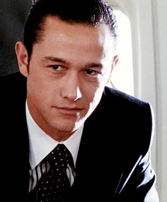
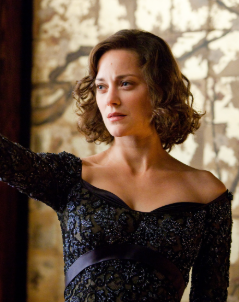

Főbb Szereplők
Dom Cobb (Leonardo DiCaprio)
Extraktor, aki titkokat lop ki az emberek elméjéből, akkor, amikor azok a legsebezhetőbbek: álmukban.
Robert Fischer (Cillian Murphy)
Egy üzleti birodalom örököse, a célpont. A rendező kifejezetten azt akarta, hogy Fischer számára az apjával való kapcsolatának felgöngyölítése legyen legfőbb lényege.

Arthur Freeman (Joseph Gordon-Levitt)
Cobb régi és legmegbízhatóbb kollégája. A célpontokkal kapcsolatos kutatómunka képezi fő feladatát.
Eames (Tom Hardy)
Cobb régi munkatársa, hamisító. Az álomban képes mások alakját is magára ölteni, amivel tökéletesen megtéveszti a célszemélyt.
Ariadne (Elliot Page)
Fiatal építész, Miles egyetemi hallgatója, a legújabb tag Cobb csapatában.
